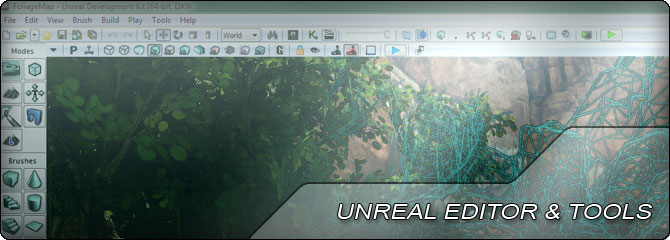
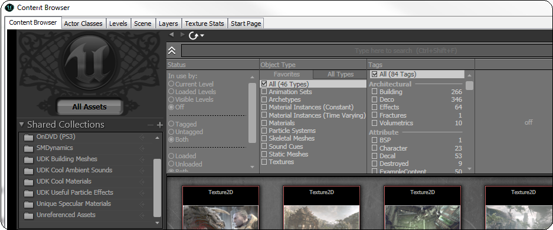
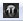
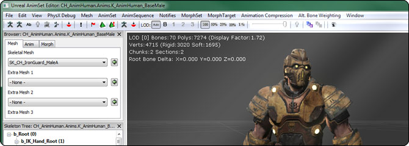
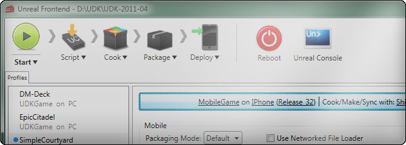

UDN
Search public documentation:
EditorAndToolsHomeCH
English Translation
日本語訳
한국어
Interested in the Unreal Engine?
Visit the Unreal Technology site.
Looking for jobs and company info?
Check out the Epic games site.
Questions about support via UDN?
Contact the UDN Staff
日本語訳
한국어
Interested in the Unreal Engine?
Visit the Unreal Technology site.
Looking for jobs and company info?
Check out the Epic games site.
Questions about support via UDN?
Contact the UDN Staff
UE3主页 >虚幻编辑器和工具
虚幻编辑器和工具

界面
- 虚幻编辑器用户指南 - 使用关卡编辑器的概述。
- 创建新地图 - 关于New Map Screen(新建地图屏幕)和地图模板的介绍。
- 主要的编辑器菜单条 - 关于编辑器菜单及选项的参考指南。
- 主要的编辑器工具条 - 关于编辑器工具条按钮的参考指南。
- 主要的编辑器工具箱 - 关于虚幻编辑器工具箱工具的参考指南。
- 编辑器按钮 - 虚幻编辑器各种控制的参考指南。
- 编辑器热键 - 虚幻编辑器热键的参考指南。
- 视口工具条 - 关于虚幻编辑器视口工具条的参考指南。
- 视图模式 - 关于视口显示模式的介绍。
- 显示标志 - 关于各种可见性标志的介绍。
- 颜色选择器 - 关于用于设置颜色属性的工具的参考指南。
- 属性窗口 - 属性窗口及其功能的参考指南。
- 在编辑器中播放 - 如何使用各种方法来在虚幻编辑器中播放关卡。
浏览器

虚幻编辑器包含了一些浏览器，它们是执行特定功能的单独窗口。有一个主浏览器窗口，所有的浏览器窗口都可以停靠在该主窗口内部，从而变成了标签窗口。浏览器的功能一般是针对编辑器中当前正在打开的地图的。 通过点击主工具条上的
按钮就会显示浏览器窗口。通过从主菜单中选择 View(视图) > Browsers（浏览器） 子菜单就可以直接打开每个特定浏览器。- Actors浏览器参考指南 - 列出了可以添加到地图中的Actor类别。
- 附加物浏览器查考指南 - 用于可视化地在Actors之间创建附加物的编辑器。
- 内容浏览器参考指南 - 用于创建、查看及修改内容资源的浏览器。
- 层浏览器参考指南 - 将地图中的Actors组织到不同的层中，以便进行选择和控制其可见性。
- 关卡浏览器参考指南 - 列出了所有的关卡，包括永久性关卡和动态载入关卡，以便进行选择、编辑及控制其可见性。
- 场景管理器参考指南 - 列出了当前关卡的所有Actors以便进行选择和编辑属性。
- 应用的资源浏览器参考指南 - 显示选中的Actor引用的资源。
- 贴图统计数据参考指南 - 显示了贴图应用的统计数据。
编辑器工具

编辑器工具是包含在虚幻编辑器中的工具，但是它们不参与地图编辑器过程。这些工具具有单独的窗口，执行针对特定类型的资源、或者多种类型资源的功能。 一般，通过点击要在编辑器中编辑的资源就可以打开编辑器，或者通过右击要编辑的资源并从关联菜单中选择可以打开资源的适当选项。- 动画编辑器用户指南 - 查看及编辑骨架网格物体、动画和顶点变形目标。
- 动画树编辑器用户指南 - 查看及编辑通过动画树混合的动画。
- 资源合并工具 - 用于将多个同样的资源合并成一个的工具。
- 引用树工具 - 用于查看一个资源所引用的资源的工具。
- 批量导入 - 关于批量导入内容到UnrealEd中的指南。
- Cascade用户指南 - 查看及编辑粒子特效。
- Kismet用户指南 - 通过可视化脚本编写的节点网络创建游戏性。
- 材质编辑器用户指南 - 通过节点网络创建应用到表面上的着色器。
- 材质实例编辑器用户指南 - 编辑参数化驱动的材质实例常量。
- Matinee用户指南 - 在地图中创建针对游戏性和过场动画的动画序列。
- PhAT用户指南 - 设置骨架网格物体的刚体物理。
- 后期处理编辑器用户指南 - 通过基于节点的网络创建后期处理可视化效果。
- 静态网格物体编辑器用户指南 - 查看及编辑静态网格物体、碰撞及UVs。
- SoundCue编辑器用户指南 - 通过节点网络创建程序化的声效资源。
- 地形编辑器用户指南 - 编辑地形创建室外环境。
引擎工具

引擎工具是编辑器之外的应用程序，用于在开发过程中执行各种功能。- UnrealConsole - 关于使UnrealConsole工具的指南。
- UnrealFrontend - 讲述了UnrealFrontend 工具。(之前的CookerFrontEnd).